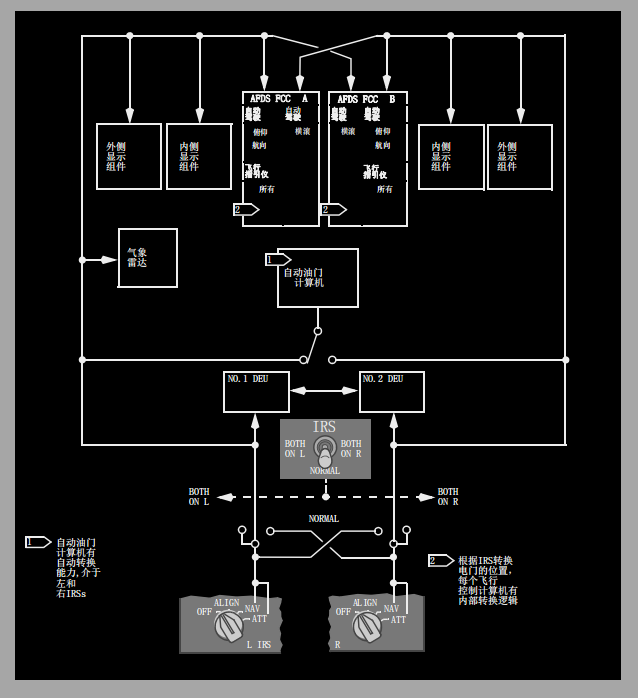

内部相关链接:
GPS
IRS输入
大气数据(ADIRU)
导航转换
1 校准(ALIGN)灯
亮 (白色)--
• 稳定-- 对应的IRS在校准（ALGN）方式、初始姿态（ATT）方式或关车循环方式下工作
• 闪烁 -- 由于IRS检测到下列情况而不能完成校准：
• 先前位置和输入位置之间差异过大或输入的当前位置不合理
• 未输入当前位置。
灭--
• IRS不在校准(ALIGN)方式
• 当方式选择器在导航(NAV)位时，校准完成且所有IRS信息可用
• 当方式选择电门在姿态(ATT)位时，姿态信息可用。输入了初始磁航向后，航向信息可用。
2 故障(FAULT)灯
亮（琥珀色）--
探测到某一影响到对应IRS ATT和/或NAV方式的系统故障
3 惯性基准系统(IRS)方式选择器
关（OFF）
• 失去校准
• 经过30秒关闭周期后，系统所有电源断开。
校准（ALIGN）--
• 将选择器从OFF转至ALIGN，进入校准循环
• 将选择器从NAV转至ALIGN，自动更新校准和消除地速误差。
导航（NAV）（卡口位）--
• 校准周期结束且输入当前位置后，系统进入NAV方式
• 在NAV方式，所有IRS信息可用于飞机系统正常工作。
姿态（ATT）-- 仅提供姿态和航向信息:
• 在ALIGN灯熄灭之前，姿态信息无效(出现姿态故障旗)
• 在ALIGN灯熄灭后，人工输入实际磁航向之前，航向信息无效(出现航向故障旗)
• 在地面惯导完成校准之前，位置和地速信息不可用
• 在重新选择ALIGN或NAV之前，选择器必须转至OFF。
4 直流电接通(ON DC)指示灯
亮（琥珀色）--
• 相应的IRS使用来自转换热电瓶汇流条的直流电源工作(交流电源不正常)
• 如果停在地面，前轮舱中的地面报警喇叭发出报警声，警告电瓶正在耗电
• 在校准自测过程中，指示灯瞬时亮是正常的。
5 直流失效(DC FAIL)指示灯
亮（琥珀色）--
• 相应IRS的直流电源不正常
• 如果其它指示灯熄灭，IRS使用交流电正常工作。
惯导系统
惯导系统为显示组件(DUs)、飞行管理系统、自动飞行系统和其它系统计算飞机位置、地速和姿态数据。
惯导系统的主要部件包括大气数据惯性基准系统组件(ADIRU)、一个惯导系统显示组件(ISDU)、IRS方式选择组件(MSU)和一个IRS转换电门。
ADIRU向FMC提供惯导位置和航迹数据，并向CDS提供姿态、高度和空速数据。
每个ADIRU都有一个IRS部分和一个大气数据部分。
惯导基准系统
安装了两部相互独立的IRS。每部IRS有三套激光陀螺和加速度表。除备用姿态指示器和备用磁罗盘外，IRS是飞机姿态和航向信息的唯一数据源。
在正常的导航方式下，IRS向相应的飞机系统提供姿态、真航向和磁航向、加速度、垂直速度、地速、航迹、当前位置以及风数据。
IRS的输出独立于外部助航设备。
IRS校准
大约需要以直线和水平方式匀速飞行约30秒钟后姿态方式才能实现再校准。
IRS必须用飞机当前位置校准并初始化后才可进入导航方式。当前位置通常通过FMC CDU输入。如果无法通过FMC CDU输入当前位置，则可通过ISDU键盘输入。校准过程中飞机必须保持静止状态。
当MSU电门从OFF转至NAV时，南北纬78度15分之间的正常校准开始。
IRS将进行一次短暂的电源测试，测试期间直流电接通(ON DC)灯亮。当ON DC灯灭而ALIGN灯亮时，校准过程开始。这时应输入飞机当前位置。
根据飞机纬度的不同，校准时间短至5分钟，长至17分钟。
北纬82度和南纬82度之间的磁差存储在每个IRS存储器中。
当前位置相对应的数据与真航向综合决定磁航向。
如果纬度/经度位置不在起飞机场4海里之内，则显示CDU草稿栏信息：VERIFY POSITION(核实位置)。
如果输入的纬度/经度位置不能通过IRS系统内部对比测试，则显示草稿栏信息：ENTER IRS POSITION（输入IRS位置）。
ALIGN灯闪烁警示机组输入的位置没有通过两个内部比较测试之一，因此应该检查其准确性。
如果输入的位置与上次存储的位置不一致，第一次内部测试失败，ALIGN灯闪烁。如果再次输入相同的位置，IRS会接受这个位置并且继续校准过程。
第二次内部位置测试将输入的纬度与系统计算的纬度比较。如果这个测试失败，ALIGN灯会再次闪烁。
如果连续两次的相同位置输入都没有通过第二次内部位置测试，FAULT灯亮。
如果测试通过，IRS将继续完成校准过程并进入NAV模式。
在过站或直达停靠的短暂地面时间，飞机停靠后选择ALIGN位可以进行30秒钟的快速校准并消除地速误差。
选择NAV之前，应人工输入经纬度以同时更新当前位置。
Note: 如果在校准或快速再校准期间飞机移动了位置，则IRS自动开始完整的校准过程
失去校准
如果IRS失去AC和DC电源，会丧失校准功能。如果MSU电门从NAV位移开，校准也会丧失。
如果飞行中失去校准，在剩余的飞行阶段导航方式(包括当前位置和地速输出)不工作。
然而，选择ATT后可用姿态方式来再校准系统并提供姿态参考。
在加速过程中可能会出现一些姿态误差，但是加速停止后会慢慢消除。
姿态方式还可以提供航向信息，但要使罗盘同步化，必须由机组人工输入初始磁航向。
IRS航向可出现每小时高达15度的漂移。因此在姿态方式下，必须定期交叉检查工作的罗盘系统并按需输入IRS更新的磁航向。
IRS输入
通常在FMC/CDU的位置起始(POS INIT)页面上人工完成当前位置或磁航向的IRS输入。也可使用ISDU。
IRS电源
IRS既可使用交流电源，也可使用直流电源。
左IRS通常由交流备用汇流条供电，右IRS由2号交流转换汇流条供电。
如果AC电源不正常，两个系统中的任意一个或两个自动转接到转换热电瓶汇流条提供的备用直流电源。
如果交流电源在五分钟内未恢复，供给右IRS的备用直流电源自动终止。
起始供电要求电瓶汇流条电源可用并且IRS方式选择器在ALIGN、 NAV或ATT位。
如果关闭IRS，则在飞机移动前必须完成一个完整的校准周期。
如果随后从飞机上断开交流电源，转换的热电瓶汇流条继续向IRS供电。
ON DC灯亮，起落架轮舱中的喇叭响以警示维护人员IRS在使用电瓶电源。
当IRS方式选择器置于OFF位时，IRS保持大约30秒有电。直至系统完全关闭后，ALIGN灯才熄灭。
惯导系统显示组件(ISDU)
ISDU位于后顶板上，它根据显示选择器和系统选择器的位置显示数据。
ISDU还包括一个用于输入当前位置和航向的键盘。
方式选择组件(MSU)
MSU位于后顶板上，它用来选择每个IRS的工作方式。
MSU上的指示灯显示每个IRS的工作方式状态。
IRS转换电门
如果任一IRS失效，可用IRS转换电门将所有相关的系统转换到工作的IRU。
